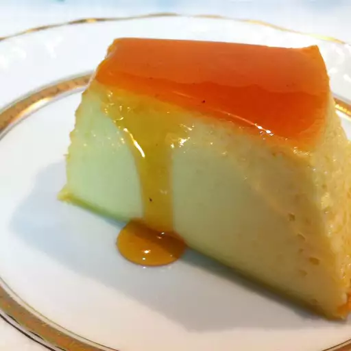

Brazilian Style Flan(Pudim de Leite Condensado)

Brazilian Style Flan, known as "Pudim de Leite" in Portuguese, is a rich and creamy dessert that melts in your mouth. This traditional Brazilian treat features a silky custard base made from sweetened condensed milk, eggs, and whole milk, which is baked to perfection. The flan is topped with a luscious, golden caramel sauce that adds a hint of sweetness and a beautiful glossy finish. Served chilled, this dessert is both indulgent and light, with a texture that's smooth and velvety. It's a beloved classic in Brazilian cuisine, often enjoyed during festive occasions or as a comforting treat after a meal
Ingredients
•1 cup white sugar
•4 eggs, separated
•1(14 ounce) can sweetened condensed milk
•3/4 cup milk, plus
•2 tablespoons milk
Directions
- Preheat the oven to 350 degrees F (175 degrees C).
- Melt sugar in a heavy saucepan over low heat, stirring constantly. Cook until sugar becomes a golden brown syrup, about 10 minutes. Pour immediately into a round baking dish, swirling so caramel syrup coats the sides of the dish. Set aside to cool.
- Place egg yolks into a blender and blend on medium speed for 5 minutes. Add condensed milk, 3/4 cup plus 2 tablespoons milk, and egg whites. Continue to blend until well combined. Pour over hardened caramel syrup in the baking dish, then cover the dish with aluminum foil.
- Line a roasting pan with a damp kitchen towel. Place the baking dish on the towel inside the roasting pan, then place the roasting pan on the oven rack. Fill the roasting pan with boiling water to reach halfway up the sides of the baking dish.
- Bake in the preheated oven until a knife inserted 1 inch from the edge comes out clean, 45 to 50 minutes. The center of flan will still be soft. Allow flan to cool before unmolding onto a plate. Refrigerate before serving.